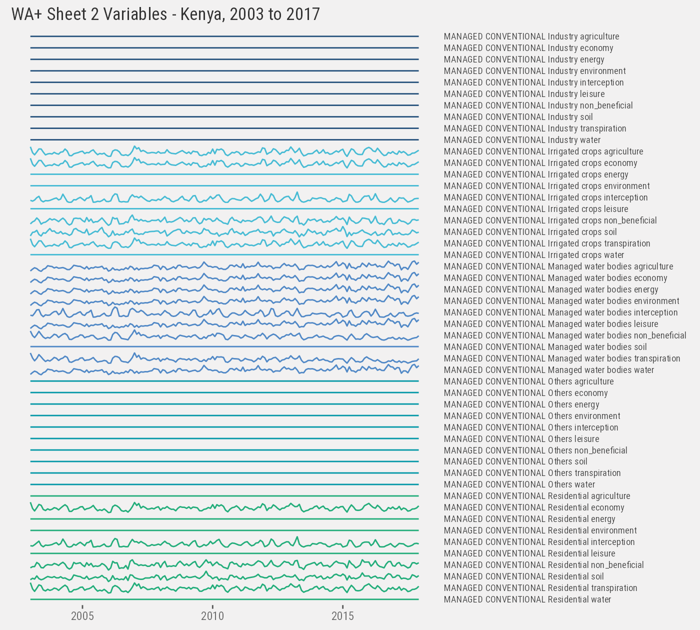
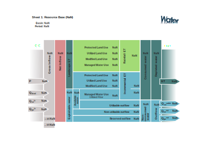

Data ETL (CSV Ouput Files)
BACOU, Melanie
Feb. 11, 2022
Source:vignettes/02_data-etl-csv.Rmd
02_data-etl-csv.RmdThis vignette documents the steps to ingest model output files (in CSV format) for use in the WA+ dashboard. The next vignette describes the approach used to ingest and post-process some of the gridded NetCDF output files.
This ETL was validated against two analyses received from IWMI scientists, one for Mali (Niger river basin), and another for Kenya (Mara river basin). The water accounting models are written in Python and the code repositories are on GitHub (e.g. WAPORWA notebooks for the Mali analysis).
The results of the WA+ balances consist in time-series of constructed hydrological variables – the time steps can vary (dekadal, monthly, seasonal, yearly steps). The series are either gridded (NetCDF) or aggregated over an entire zone of interest (CSV output files). The modeled variables are further enriched to construct visual balances (or “accounting sheets”) that represent key water availability and water use indicators over time.
The WA+ modeling approach can vary slightly across use cases (different temporal extent, number of sub-basins, different flow units, different mix of input layers and output variables). To the extent possible this ETL intends to produce a generalized data model.
The steps outlined below serve as a blueprint for a generic data_etl() method included in this package (refer to the method’s documentation for more details, esp. how to ingest additional result sets). The objective is to generate a standardized data cube suitable for online analytics (and not limited to this dashboard).
# Location of WA+ output datasets
dir <- getOption("wa.data")File and Variable Inventory
We start below by inventorying all basin-level variables contained in the modeled CSV files.
# List all output CSV
data <- list(
ken = file.path(dir, "./ken/hydroloop_results/csv"),
mli = file.path(dir, "/mli/csv_km3")
) %>%
lapply(list.files, pattern="*.csv", recursive=TRUE, full.names=TRUE) %>%
lapply(data.table) %>%
rbindlist(idcol="iso3", use.names=TRUE, fill=TRUE) %>%
setnames("V1", "path")
# Extract timestamps and sheet codes from file names
data[, `:=`(
file = basename(path)
)][, `:=`(
year = str_extract(file, "_[0-9]{4}") %>% str_sub(2,5) %>% as.integer(),
month = str_extract(file, "[0-9]{4}_[0-9]{1,2}") %>% str_sub(6,7) %>% as.integer(),
sheet = str_extract(tolower(file), "sheet[0-9]{1}")
)] %>% setorder(iso3, sheet, year, month, na.last=TRUE)
# Append flow units (typically km3 or MCM, will need to be specified manually)
data[, unit := fcase(
iso3=="mli", "km3",
iso3=="ken", "km3"
)]We have 8 yearly water balances for Mali (Sheet #1 variables), 15 yearly balances for Kenya (across 6 sheets), as well as monthly and seasonal breakdowns.
data[iso3=="mli", .(iso3, file, sheet, year, month)] %>%
paged_table()
data[iso3=="ken" & !is.na(year) & is.na(month), .(iso3, file, sheet, year, month)] %>%
paged_table()
data[iso3=="ken" & !is.na(month), .(iso3, file, sheet, year, month)] %>%
paged_table()The Kenya analysis also includes yearly, seasonal, and monthly time-series for an additional 57 variables:
Let’s extract this periodicity (we name it period) based on file naming conventions (we ignore Sheets #4 to Sheets #6 for now):
data[, `:=`(
period = fcase(
is.na(year) & is.na(month) & str_detect(file, "monthly"), "month",
is.na(year) & is.na(month) & str_detect(file, "season"), "season",
is.na(year) & is.na(month) & str_detect(file, "year"), "year",
!is.na(year) & is.na(month), "year",
!is.na(year) & !is.na(month), "month",
default=NA
)
)]
# Verify
data[, .N, keyby=.(iso3, sheet, period)] %>%
paged_table()Note that in the case of Kenya some of the monthly variables are duplicated (see below).
Variable Inspection
We also need to validate naming conventions and units for all output variables, so we continue by inspecting individual files starting with Mali.
Sheet #1
f <- data[iso3=="mli"]
mli <- lapply(1:nrow(f), function(x) fread(f[x, path])[, `:=`(
iso3 = f[x, iso3],
sheet = f[x, sheet],
year = f[x, year],
period = f[x, period]
)]) %>% rbindlist()
setnames(mli, tolower(names(mli))) %>%
paged_table(options=list(max.print=300))Output for Sheet #1 include 34 unique variables categorized into class and subclass. The naming is consistent across years.
mli %>%
ggplot() +
geom_line(aes(year, value, color=paste(class, subclass))) +
facet_grid(paste(class, subclass, variable)~., scales="free_y") +
th() +
labs(x=NULL, y=NULL) +
ggtitle("WA+ Sheet 1 Variables - Mali, 2009 to 2016")Similarly we look at Kenya’s monthly time-series. First at Sheet #1 variables:
f <- data[iso3=="ken" & period=="month" & sheet=="sheet1" & !is.na(year)]
ken_1_m <- lapply(1:nrow(f), function(x) fread(f[x, path])[, `:=`(
iso3 = f[x, iso3],
sheet = f[x, sheet],
year = f[x, year],
month = f[x, month],
period = f[x, period]
)]) %>% rbindlist()
setnames(ken_1_m, tolower(names(ken_1_m))) %>%
paged_table(options=list(max.print=300))
ken_1_m %>%
ggplot() +
geom_line(aes(as.Date(paste(year, month, 1), "%Y %m %d"), value, color=subclass)) +
facet_grid(paste(class, subclass, variable)~., scales="free_y") +
th() +
labs(x=NULL, y=NULL) +
ggtitle("WA+ Sheet 1 Variables - Kenya, 2003 to 2017")Similarly with the yearly time-series:
f <- data[iso3=="ken" & period=="year" & sheet=="sheet1" & !is.na(year)]
ken_1_y <- lapply(1:nrow(f), function(x) fread(f[x, path])[, `:=`(
iso3 = f[x, iso3],
sheet = f[x, sheet],
year = f[x, year],
month = f[x, month],
period = f[x, period]
)]) %>% rbindlist()
setnames(ken_1_y, tolower(names(ken_1_y))) %>%
paged_table(options=list(max.print=300))Sheet #2
Then we extract Sheet #2 yearly and monthly variables (this is a breakdown of evapotranspiration by land use classes):
f <- data[iso3=="ken" & period %in% c("year", "month") & sheet=="sheet2" & !is.na(year)]
ken_2 <- lapply(1:nrow(f), function(x) fread(f[x, path])[, `:=`(
iso3 = f[x, iso3],
sheet = f[x, sheet],
year = f[x, year],
month = f[x, month],
period = f[x, period]
)]) %>% rbindlist()
setnames(ken_2, tolower(names(ken_2))) %>%
paged_table(options=list(max.print=300))Sheet #2 uses a “wide” data structure, we first normalize it into a “long” format:
# Normalize
ken_2 <- melt(ken_2, id.vars=c("land_use", "class", "iso3", "sheet", "year", "month", "period"),
variable.factor=FALSE)
# Standardize category names
setnames(ken_2, c("land_use", "class"), c("class", "subclass"))
setorder(ken_2, class, subclass, variable, year, month, period)There are 280 unique variables in this sheet. We only plot variables for the first land use class for illustration purposes:
ken_2[period=="month" & class %in% ken_2[, unique(class)][1]] %>%
ggplot() +
geom_line(aes(as.Date(paste(year, month, 1), "%Y %m %d"), value, color=subclass)) +
facet_grid(paste(class, subclass, variable)~., scales="free_y") +
th() +
labs(x=NULL, y=NULL) +
ggtitle("WA+ Sheet 2 Variables - Kenya, 2003 to 2017")
Sheet #3
We inspect results for Sheet #3 “Agriculture Services”. In the Kenya analysis, variables for Sheet #3 to Sheet #6 are available as yearly, seasonal, and/or monthly time-series (across multiple CSV files). The yearly and seasonal files include 1 variable per file. The monthly files include several levels (1.0 to 72.0)1.
We (arbitrarily) gather all the seasonal time-series2 below:
f <- data[iso3=="ken" & sheet=="sheet3" & period %in% c("season") & str_detect(file, "54.0")]
ken_3 <- lapply(1:nrow(f), function(x) fread(f[x, path])[, `:=`(
iso3 = f[x, iso3],
sheet = f[x, sheet],
year = f[x, year],
month = f[x, month],
period = f[x, period],
variable = str_replace(f[x, file], "sheet3_54.0_", "") %>% str_replace("_season.csv", "")
)]) %>% rbindlist()
ken_3[, `:=`(
# Drop counter column
V1 = NULL,
# Ensure end of season is last day of month (for consistency with other sheets)
end_dates = end_dates - 1
)][, `:=`(
# Encode year/month columns using end of season
year = year(end_dates),
month = month(end_dates)
)]
setnames(ken_3,
c("Seasonal", "start_dates", "end_dates"), c("value", "date_start", "date_end"))
setcolorder(ken_3,
c("iso3", "sheet", "variable", "date_start", "date_end", "year", "month", "value"))
setorder(ken_3, variable, year, month) %>%
paged_table(options=list(max.print=300))Plotting the entire series (6 variables):
ken_3 %>%
ggplot() +
geom_line(aes(as.Date(paste(year, month, 1), "%Y %m %d"), value, color=variable)) +
facet_grid(variable~., scales="free_y") +
th() +
labs(x=NULL, y=NULL) +
ggtitle("WA+ Sheet 3 Variables - Kenya, 2003 to 2017 (seasonal)")## Warning: Removed 24 row(s) containing missing values (geom_path).Finally we gather all Sheet #1 to Sheet #3 variables above into a long table format (data cube).
cube <- rbind(mli, ken_1_m, ken_1_y, ken_2, ken_3, fill=TRUE)
setcolorder(cube,
c("iso3", "sheet", "class", "subclass", "variable",
"year", "month", "period", "date_start", "date_end"))For consistency’s sake, we encode date_start and date_end in all sheets (incl. yearly and monthly variables):
cube[is.na(date_start) & is.na(month), `:=`(
# yearly series: 1/1 to 12/31
date_start = as.IDate(paste(year, 1, 1), "%Y %m %d"),
date_end = as.IDate(paste(year, 12, 31), "%Y %m %d")
)][is.na(date_start) & !is.na(month), `:=`(
# monthly series: 1/1 to 1/31
date_start = as.IDate(paste(year, month, 1), "%Y %m %d"),
date_end = ceiling_date(as.IDate(paste(year, month, 20), "%Y %m %d"), "months") - days(1)
)]
#saveRDS(cube, "./data-raw/rds/data.rds")At this point the generated data cube includes the following dimensions and measures:
- iso3
- sheet
- class
- subclass
- variable
- year
- month
- period
- date_start
- date_end
- value
Calculated Measures
Another ETL step is required to map the variable codes used in the data files to their visual representation in the WA+ Sheets (SVG designs).
knitr::include_graphics(file.path("./fig", list.files("./fig")))
This mapping is embedded in the WA+ print_sheet Python module, (e.g. Sheet 1 in the WAPORWA repo). Importantly many SVG elements are fields calculated from output variables. We might need to replicate that logic as part of the ETL process3.
Sheet #1
Field mappings and field formulas for Sheet #1 are constructed per the list shown below.
s1 <- fread(system.file("./data-raw/csv/sheet_1_schema.csv", package="WADashboard"))
s1[, .SD, .SDcols=-c(1,7)] %>% paged_table()Apply mapping:
# Check for NA in data cube
cube[is.na(value), .N, by=.(iso3, sheet, year, month, variable)] %>% paged_table()There are 24 variables with missing values in Sheet #3, we leave them as-is for now.
# Add unique variable ID to data cube based on S1 mapping
cube[s1, on=.(sheet, class, subclass, variable), id := i.id]
# Verify
cube[sheet=="sheet1", .N, keyby=.(class, subclass, variable, id)] %>%
paged_table()
# To wide format
cube_1 <- dcast(cube[sheet=="sheet1"], sheet+iso3+period+date_start+date_end+year+month~id)
# Calculate fields
ids = s1[order(step)][(calculated), unique(id)]
for(i in ids) cube_1[, (i) := s1[id==i, eval(parse(text=formula))]]
# Verify that all Sheet #1 fields have been mapped
s1[!id %in% names(cube_1), id]## character(0)
# Export
# saveRDS(cube_1, "../data-raw/rds/data_sheet_1.rds")Note that placeholder Q SW outlet on Sheet #1 and land_et variable in the code need clarification.
Sheet #2
We proceed similarly for mapping fields in Sheet #2 and Sheet #3. Sheet #2 is a breakdown of ET and T into 280 use classes. Note that we don’t have exact formulas to calculate aggregated measures on this sheet (but can be inferred from the SVG design).
cube_2 <- cube[sheet=="sheet2"][, id := NULL]
# Wide format
cube_2 <- dcast(cube_2, ...~variable)[, `:=`(
# Add constructed measures
evaporation = water + soil + interception,
et = water + soil + interception + transpiration,
beneficial = agriculture + environment + economy + energy + leisure
)]
# Long format
cube_2 <- melt(cube_2, id.vars=1:9, variable.factor=FALSE)
# We create unique IDs (needed to populate SVG design)
s2 <- cube_2[, .N, by=.(class, subclass, variable)
][, `:=`(
N = NULL,
sheet = "sheet2",
id = sprintf("%s_%s_%s",
fcase(
class=="MANAGED CONVENTIONAL", "malu",
class=="MANAGED NON_CONVENTIONAL", "malu",
class=="MODIFIED", "molu",
class=="PROTECTED", "plu",
class=="UTILIZED", "ulu"
),
fcase(
subclass=="Industry", "industry",
subclass=="Irrigated crops", "crops",
subclass=="Managed water bodies", "waterbodies",
subclass=="Others", "others",
subclass=="Residential", "residential",
subclass=="Greenhouses", "greenhouses",
subclass=="Indoor domestic", "idomestic",
subclass=="Indoor industry", "iiindustry",
subclass=="Livestock and husbandry", "livestock",
subclass=="Power and energy", "powerandenergy",
subclass=="Forest plantations", "forest",
subclass=="Rainfed crops", "rainfed",
subclass=="Settlements", "settlements",
subclass=="Forest", "forest",
subclass=="Glaciers", "glaciers",
subclass=="Natural grasslands", "grasslands",
subclass=="Natural water bodies", "waterbodies",
subclass=="Shrubland", "shrubland",
subclass=="Wetlands", "wetlands"
),
fcase(
variable=="agriculture", "agr",
variable=="economy", "eco",
variable=="energy", "ene",
variable=="environment", "env",
variable=="interception", "i",
variable=="leisure", "lei",
variable=="non_beneficial", "n",
variable=="soil", "s",
variable=="transpiration", "t",
variable=="water", "w",
variable=="beneficial", "b",
variable=="et", "et",
variable=="evaporation", "e"
))
)][, id := str_replace(id, "others", fcase(
# Fix duplicated "others" as in SVG
class=="MANAGED CONVENTIONAL", "others1",
class=="MANAGED NON_CONVENTIONAL", "others2",
default="others")
)]
# Verify ID uniqueness
s2[, .N, by=id][N>1]## Empty data.table (0 rows and 2 cols): id,NApply mapping:
# Add unique variable ID to data cube based on S2 mapping
cube_2[s2, on=.(sheet, class, subclass, variable), id := i.id]
# Verify that all Sheet #2 fields have been mapped
s2[!id %in% cube_2[, unique(id)], id]## character(0)
# Aggregate measure by flow type
vars_1 <- cube_2[, .(value = sum(value, ba.rm=T)
), by=.(sheet, iso3, year, month, period, date_start, date_end, variable)]
# Aggregate measure by top 4 land use class
vars_2 <- cube_2[variable %in% c("et", "transpiration"), .(value = sum(value, na.rm=T)
), by=.(sheet, iso3, year, month, period, date_start, date_end, class, variable)]
# Total ET
vars_3 <- cube_2[variable %in% c("et"), .(value = sum(value, ba.rm=T)
),by=.(sheet, iso3, year, month, period, date_start, date_end, variable)]
# Make unique IDs
vars_1 <- dcast(vars_1, sheet+iso3+period+date_start+date_end+year+month~variable)
vars_3 <- dcast(vars_3, sheet+iso3+period+date_start+date_end+year+month~variable)
vars_2[, `:=`(
id = sprintf("%s_%s",
fcase(
class=="MANAGED CONVENTIONAL", "malu",
class=="MANAGED NON_CONVENTIONAL", "malu",
class=="MODIFIED", "molu",
class=="PROTECTED", "plu",
class=="UTILIZED", "ulu"
),
fcase(
variable=="et", "et",
variable=="transpiration", "t"
))
)]
vars_2 <- dcast(vars_2, sheet+iso3+period+date_start+date_end+year+month~id,
fun.aggregate=sum, na.rm=T)
# Combine all into wide format
cube_2 <- dcast(cube_2, sheet+iso3+period+date_start+date_end+year+month~id
)[vars_1, on=.(sheet, iso3, period, date_start, date_end, year, month)
][vars_2, on=.(sheet, iso3, period, date_start, date_end, year, month)
][vars_3, on=.(sheet, iso3, period, date_start, date_end, year, month)]
# Verify variable uniqueness
anyDuplicated(names(cube_2))## [1] 0
# Save final Sheet 2 schema
setcolorder(s2, c("sheet", "id", "class", "subclass", "variable"))
# fwrite(s2, "../data-raw/csv/sheet_2_schema.csv")
# Export
# saveRDS(cube_2, "../data-raw/rds/data_sheet_2.rds")Below is a final variable catalog for Sheet #2.
s2 <- fread(system.file("./data-raw/csv/sheet_2_schema.csv", package="WADashboard"))
s2[, .SD, .SDcols=-c(1)] %>% paged_table()And we plot some of the aggregate time-series for Kenya.
Sheet #3
[forthcoming]
cube[sheet=="sheet3", .N, keyby=.(class, subclass, variable)] %>%
paged_table()In the next vignette we outline an approach to ingest all gridded NetCDF output files.